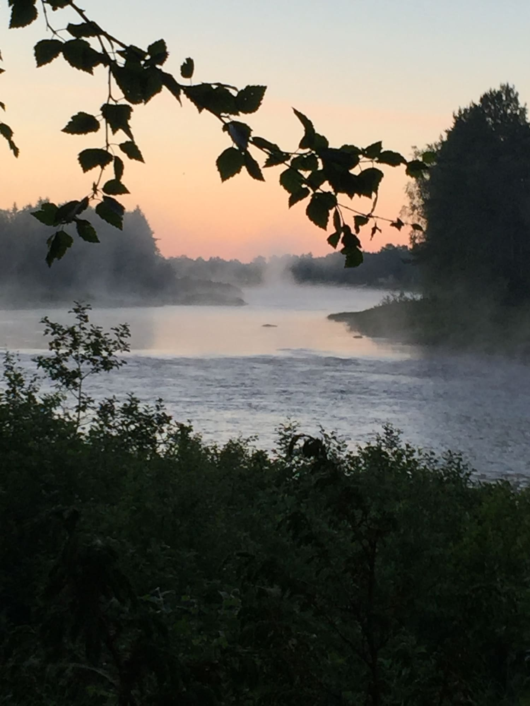

Fishy
Your Personal Fishing Journal Henkilökohtainen kalastuspäiväkirjasi
About Fishy
Fishy helps you record and remember your fishing trips. Log your catches, save your favorite spots, manage your gear, and track the stats and conditions that lead to your best fishing days.
Fishy is built with privacy first. Your fishing spots and catches stay on your device. We don't collect, track, or sell your data.
Tietoa Fishystä
Fishy auttaa sinua tallentamaan ja muistamaan kalastusretkesi. Kirjaa saaliisi, tallenna suosikkipaikkasi, hallitse välineitä ja seuraa tilastoja ja olosuhteita, jotka johtavat parhaisiin kalastuspäiviisi.
Fishy on rakennettu yksityisyys edellä. Kalastuspaikkasi ja saaliisi pysyvät laitteellasi. Emme kerää, seuraa tai myy tietojasi.
Features
Save Fishing Spots
Mark your favorite locations and keep them private on your device.
Photo Journal
Capture your catches with photos and preserve the memories.
Weather Conditions
Track weather and conditions to learn what works best.
Catch Statistics
See your fishing history and discover patterns over time.
Gear Management
Track your rods, reels, lures, and other equipment. See which gear performs best.
Share Your Catches
Share your catches with friends. You control what to include — keep your secret spots private or share them.
Ominaisuudet
Tallenna kalastuspaikat
Merkitse suosikkipaikkasi ja pidä ne yksityisinä laitteellasi.
Valokuvapäiväkirja
Ikuista saaliisi valokuvilla ja säilytä muistot.
Sääolosuhteet
Seuraa säätä ja olosuhteita oppiaksesi mikä toimii parhaiten.
Saalistilastot
Näe kalastushistoriasi ja löydä kaavoja ajan myötä.
Välinehallinta
Seuraa vapojasi, kelojasi, vieheitäsi ja muita varusteita. Näe mikä kalusto toimii parhaiten.
Jaa saalistietosi
Jaa saalistietosi ystävillesi. Päätät itse mitä jaat — pidä salaiset paikkasi yksityisinä tai jaa ne.


Collaboration
Made on the Simojoki, with Pataluha
Fishy was built and tested on the banks of the Simojoki at Pataluha — a salmon cabin in Alaniemi, Simo, on the edge of Lapland. A lot of what ended up in the app came out of real days on those rapids.
If you want to fish the river yourself, Pataluha is a proper cabin rather than the usual fishing hut: a wood-heated sauna, a full kitchen, a hot shower and three rapids within reach.
Yhteistyö
Tehty Simojoella, yhdessä Pataluhan kanssa
Fishy on kehitetty ja testattu Simojoen rannalla Pataluhassa — lohimökissä Alaniemessä, Simossa, Lapin rajalla. Moni sovelluksen ominaisuus on syntynyt oikean kalastuksen parissa näillä koskilla.
Jos haluat itse joelle, Pataluha ei ole tavallinen kalamaja: puulämmitteinen sauna, täysin varusteltu keittiö, juokseva vesi ja kolme koskea lähistöllä.